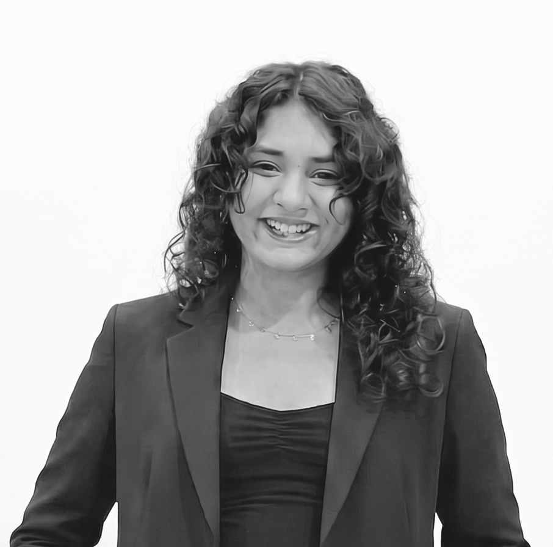

Meet the people of AU-IFMF
Organizing Committee
The AU-IFMF Organizing Committee provides strategic direction and oversees the planning, coordination and execution of the festival.
Partha P Samanta
Head- SoJMC
Festival Director
Festival Director

Dr. Rochak Saxena
Assistant Professor
Festival Convenor
Festival Convenor

Dr. Sandeep Kumar
Associate Professor
Festival Co–Convenor
Festival Co–Convenor

Dr. Dhara Bhatt
Assistant Professor
Festival Co–Convenor
Festival Co–Convenor

Dr. Suruchi Agrawal
Assistant Professor
Festival Co–Convenor
Festival Co–Convenor
Saifuddin Kanchwala
Technical Coordinator
Javed Shaikh
Graphic Design Coordinator
Scarlett S Noronha
Digital Marketing Coordinator
Jaykumar Mer
Digital Media Coordinator
Student Team
Run by students

Dhanishi Patel
Festival President

Praval Sharma
Festival Vice President

Ikshu Shah
Festival General Secretary

Megh Dave
Head of Programming – Film
Coordinator: Mihir Solanki
Team Members: Chahat Variyani & Himalaya Ahuja
Team Members: Chahat Variyani & Himalaya Ahuja

Charmi Sarvaiya
Head of Programming – Music
Coordinator: Yashvi Shah
Team Members: Devshree Purohit, Prashita Shekhawat & Sandeepta Tripathy
Team Members: Devshree Purohit, Prashita Shekhawat & Sandeepta Tripathy

Tiya Tewani
Head- Operation & Hospitality
Coordinator: Neha Kadiwar
Team: Leekisha Agrawal, Marance Vadodariya, Mahek Malu, Disha Mundhra, Drashti Patel & Parth Swami
Team: Leekisha Agrawal, Marance Vadodariya, Mahek Malu, Disha Mundhra, Drashti Patel & Parth Swami

Esha Chopra
Head- Marketing & PR
Coordinator: Mishti Jain
Team: Hea Gupta, Nimisha Jai, Priyal Jogani, Jyoti Gupta & Smriti Batra
Team: Hea Gupta, Nimisha Jai, Priyal Jogani, Jyoti Gupta & Smriti Batra

Krishti Radadiya
Head — Sponsorship & Partnerships
Coordinator: Shiv Patel
Team: Krisha Patel, Unnati Surana, Krisha Nanda & Pratyush Hemanani
Team: Krisha Patel, Unnati Surana, Krisha Nanda & Pratyush Hemanani
Hrishikesh Gautam
Head — Media & Technical
Coordinator: Ishika Tiwari
Team: Priyansh Jariwala, Arav Sardev
Alumni Team
Run by alumni
(all access members)
Bhumi Sheth
Batch 2023
Jyoti Jindal
Batch 2023
Eeyaa Gautam
Batch 2023
Khushi Pandya
Batch 2023

Freya Parekh
Batch 2023
HA
Harshi Agrawal
Batch 2023
HG
Hussaina Gupti
Batch 2023
Raghav Goel
Batch 2023